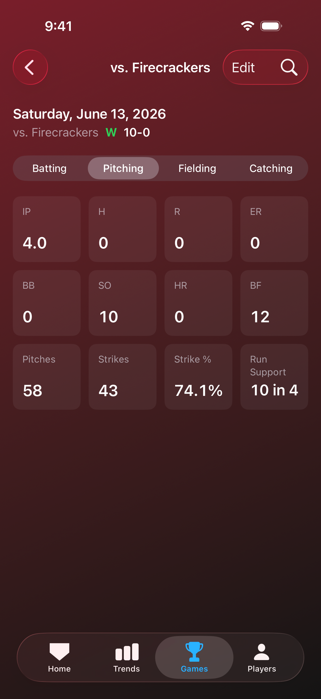
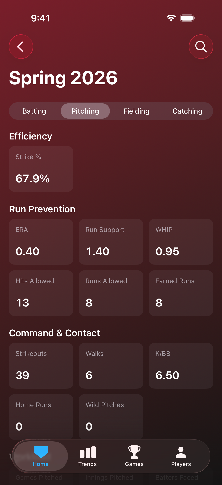
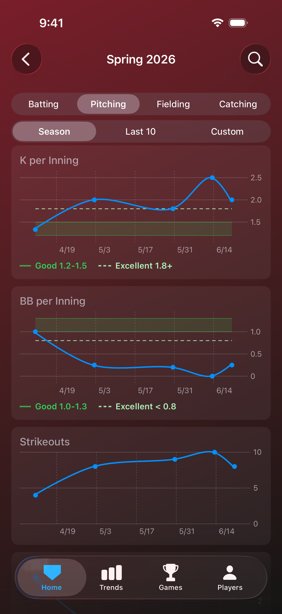
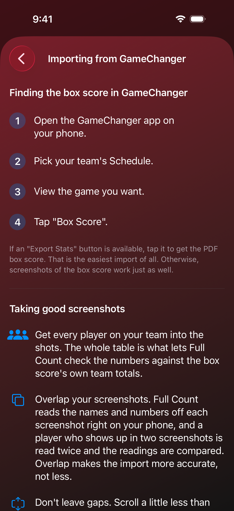
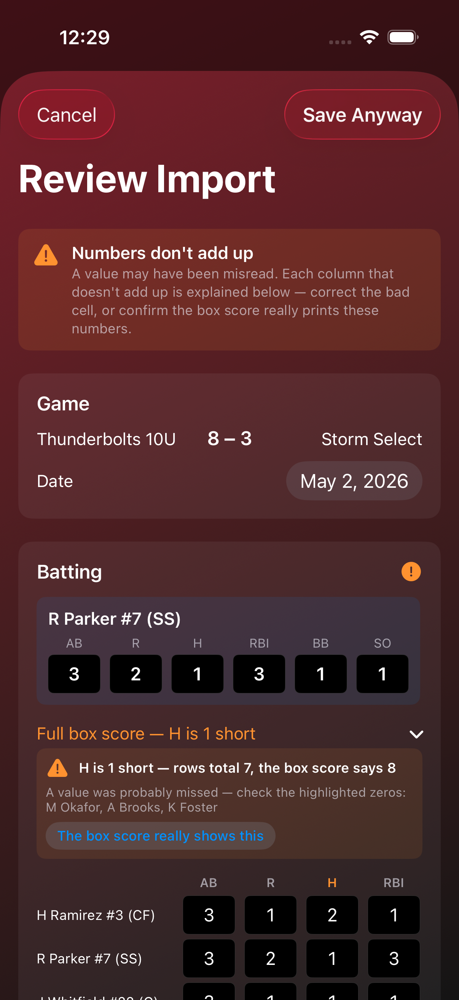

Why do some stats appear on some views but not others?
Full Count shows a stat in the places where it actually means something. That sounds like a dodge, so here is the real rule, which comes down to three kinds of stats.
Counting stats show up almost everywhere
Hits, strikeouts, walks, RBI, innings pitched, pitches thrown. These are just records of what happened, so they appear on a single game's box score, they add up into season and career totals, and they get plotted game by game on the charts.
Rate stats need a season to mean anything
Batting average, on-base percentage, slugging, ERA, and WHIP are all fractions, and a fraction with a tiny denominator is noise. One at bat and one hit is a 1.000 average, which tells you nothing about your player. So these live on the season dashboard, the career totals, and the trend charts, where enough games have accumulated for the number to settle down.
Strike percentage is the one rate you will see on a single game, because a pitcher throws dozens of pitches in one outing. The denominator is already large by the time she walks off the field.


Some stats only exist as an aggregate
Games pitched, games played, and a win-loss record are counts across games. A single game can't have a record, so a game shows a bold W or L next to its stat line instead, and the record appears where a list of games does.
The charts favor stats you can compare game to game
Charts exist to show a trend, so they lean on stats that survive a short game and a long one. That's why you'll find K per inning and BB per inning on the pitching charts, and strikeout rate and walk rate on the batting charts, rather than raw per-game totals alone. A four-inning outing and a six-inning outing are honestly comparable once the stat is expressed per inning.
One list is entirely yours: the stat tiles on the Home tab. Settings lets you pick which stats sit there, from every pitching and batting stat the app tracks.
What counts as a standout game?
Best Performances reads every game as it comes in and keeps the ones that stand out, across the whole career. A game is listed once, under the rarest thing it qualifies for.
At the plate: a home run game, three or more hits, a perfect day with a hit in every at bat, and hitting for the cycle, which is a single, a double, a triple and a home run in the same game.
In the circle: a no-hit outing, and a perfect outing, which allows no hits, no walks and no home runs. Both come with a minimum workload. The outing has to cover at least three innings, or at least one full inning when your player was her team's only pitcher, since a dominant game that ends early on the run rule is the opposite of a short relief appearance. A single out with no hits allowed is not a standout outing.
In the field: a triple play, a double play, and an errorless game with at least four chances, so a quiet afternoon with nothing hit her way does not count as a clean one.
Behind the plate: a pickoff, a game with two or more runners thrown out stealing, and a clean game with no passed balls over at least five innings caught.
Fielding and catching highlights come from GameChanger CSV exports, which carry the fielding stats a box score does not.

Why do some charts have performance targets and others don't?
Performance targets are drawn only for rate stats. On the pitching side that means strike percentage, ERA, WHIP, K per inning, and BB per inning. On the batting side it means batting average, on-base percentage, slugging, OPS, strikeout rate, and walk rate. In the field it is fielding percentage, and behind the plate it is caught-stealing rate, which waits for ten attempts before it draws anything.
The reason is that a rate is comparable across games, divisions, and workloads. Strike percentage means the same thing whether your player threw 40 pitches or 90. A raw count doesn't work that way. Six strikeouts in a game is outstanding in four innings and ordinary in seven, and it depends just as much on how many batters came to the plate as on how she pitched. Nobody publishes a performance target for "strikeouts per game" at 12U, and if Full Count drew one, it would be making it up. So the counting-stat charts show your player's own line and nothing else.
Two more things worth knowing about the lines you do see. They are specific to the age division and the sport, so a 12U softball season is measured against 12U softball numbers and nothing else. And where no honest performance target exists, the chart says so rather than inventing one. ERA is the clearest example: below 12U, unearned runs and scorekeeping judgment dominate the number, so the source tables give no ERA tiers at all and the chart tells you that instead of drawing a line.

A chart that spans more than one division steps its performance target where the division changed, so an older season stays measured against the level your player was competing at. If you'd rather not see the lines at all, you can turn them off in Settings.
One note on the ERA label. Full Count plots earned runs per inning rather than a traditional scaled ERA, because youth games run anywhere from four to six innings and a seven-inning assumption would distort every number. The targets are converted to match.
Where do the targets come from?
They are coaching-consensus tiers, assembled from the kinds of resources coaches and families actually use: coaching guides, recruiting guidance, and the target charts published by training sites. They are not official league data, and they are not measured averages of a real population of players. No governing body publishes that, which is exactly why the tiers had to be built this way.
Treat them as a coach's rule of thumb. The intent is a sense of where a player stands and what the next step looks like, not a scouting verdict on your kid. Full Count draws only the Good and Excellent tiers, deliberately, because framing a season around a middle tier isn't useful to a young player.
The tiers differ by age division and by sport, with separate softball and baseball tables, and they shift as players move up. Batting averages generally decline with age as the pitching gets better and the distances get longer, so a number that was ordinary at 10U can be strong at 14U.
Context the lines can't capture still matters. Rec and travel ball are different environments, and a handful of games is a small sample no matter how the chart looks. A hot weekend is a hot weekend.
How do I export the box score from GameChanger?
The PDF export is the easiest import of all, when you have access to it.
- Open the GameChanger app on your phone.
- Pick your team's Schedule.
- View the game you want.
- Tap "Box Score".
- Tap "Export Stats" to get the PDF.
Then open Full Count, tap Import, and choose Import from PDF. You can select several games at once.
Two limits to be aware of. This is available in the GameChanger mobile app only, not on the web, and the "Export Stats" button appears only for accounts that have been given access to it. GameChanger calls that level Team Staff. If you do not see the button, you haven't done anything wrong, and you don't need to ask anyone for permission. Screenshots of the same box score work just as well, and the next answer covers how to take them.

How do I take good screenshots of a box score?
Get to the box score the usual way, through Schedule, the game, then "Box Score". Then take as many screenshots as you need to capture all of your team's stats.
- Capture all of your team's rows at a minimum. The whole table is what lets Full Count check every number against the box score's own team totals, which is how a misread digit gets caught before anything is saved.
- Start at the top. Take your first screenshot without scrolling to make sure you capture both teams and the final score.
- Overlap your captures. A row that appears in two screenshots is read twice and the readings are compared. Overlap makes the import more accurate, not less.
- Keep going until you capture the opponent's shaded bar. Sometimes the team names are truncated at the top of the screen. Scroll and shoot beyond your team's data, to include the start of the opponent's section, with a shaded bar that shows their full name.
- Send directly, or Save to Photos. Your screenshots save to Photos automatically. You can save them all to Photos, then go to Full Count, pick Import, and navigate to Photos. Or, after each screenshot you can immediately share the photo to Full Count. Full Count will stage them one at a time and hold them until you're ready to import them. (See the next question for details.)
The same guidance is in the app, under Settings, if you'd rather have it on your phone at the field.

Do I have to save the screenshot to my phone first?
No. Take the screenshot in GameChanger, tap the preview that appears in the corner, then choose Full Count. The game waits on the Home screen until you import it. When you are finished with the screenshot you can either keep it or dismiss it, and dismissing it means it was never saved to your phone at all.
Where can the files come from?
From your phone, or from cloud storage. Google Drive is the one we test against directly. Other storage apps that appear alongside your files, or that offer a share option of their own, should behave the same way, but we have not tested every one and will not claim more than we know.
What is the easiest way for a whole team to import games?
Have one person with Team Staff access export each game as a CSV and put the CSVs in a shared folder. Google Drive is the one we test. Everyone else imports from there, one CSV at a time by sharing it to Full Count or choosing it from the Files app, or a whole weekend at once by putting the CSVs in a ZIP and sending that. The CSV is the best file to share: it carries every stat GameChanger keeps, including fielding, and it reads exactly, with nothing to recognize. Each CSV asks you for the game's date and opponent, since the file does not carry them. Each family imports the same CSVs for their own player, so one folder serves the whole team.
Can I import a whole weekend at once?
Yes, and all file types, CSVs, PDFs and screenshots, can go in the ZIP file together as a single batch. You choose the player once, and a single summary at the end reports what happened to each game. The screenshots do not need sorting first, because each one names its own game, including two meetings with the same opponent on the same day.
Why did it only take some of my files?
Sending files straight into an app is capped at twelve at a time. That cap belongs to the iPhone rather than to Full Count. Full Count reports how many were left out and points you to the ZIP route. Choosing screenshots from inside the app carries the same twelve, so a ZIP is the way past it either way. The cap does not apply to files inside a ZIP.
What is Import from ZIP?
A ZIP file can hold screenshots, PDF box scores, or both. There are two ways to send one: share the ZIP to Full Count from wherever it is stored, or open Full Count, tap Import and choose Import from ZIP.
Full Count unpacks it and treats the contents exactly as though you had sent them individually, so choosing the player, reviewing a game and reading the summary all work the same. A ZIP has no limit on how many files it holds, which also makes it the answer for cloud storage that will only share one file at a time.
How much fits in one ZIP?
More than a season. One ZIP can be up to 80 MB, which works out to roughly 300 screenshots, or about 150 games. PDFs are far smaller, so around 2,500 of those will fit. For a sense of scale, three seasons of one family's screenshot folders came to 14 MB in total.
There is no limit on the number of files, only on the total size. A ZIP over 80 MB is refused before any of it is read, with a request to send the games as a few smaller ZIPs or to import them without zipping. The same ceiling applies whether you share a ZIP in from another app or choose Import from ZIP inside Full Count.
Are there ZIP files it will not take?
Password protected ones, ones larger than 4 GB, and ones over the 80 MB ceiling above. Full Count reports which of those applies and stops there rather than importing half a batch. Other archive formats, such as RAR and 7z, are not supported.
Why didn't it ask me to check the game?
Because there was nothing to ask. Full Count stops for a review when a team is new, when a season is new, when it cannot tell which row is your player's, or when your player's numbers do not match the box score's own totals. When your player's stats read cleanly and the game belongs to a team and season you already have, it goes straight in. The summary at the end still names every game.
What does the review look like when it does ask?
One form with everything Full Count read for your player: both teams, the score, the date, the batting stats and the pitching stats. Anything doubtful is outlined, and the reason is written at the top in plain words, such as "R is 1 short: the players' R adds up to 6 but the screenshot's team total is 7." Tap the box and type the right number, or leave it as printed if the box score is what's wrong. Everything else on the form stays quiet.
A teammate's numbers didn't add up. Why did the game import anyway?
Because your player's stats are what Full Count keeps, and they read cleanly. A difference on another player's row never stops an import. The import summary mentions it and the game is listed under Check Imported Games in Settings, so you can look when you have a minute, or open the game and tap Edit. If you would rather not hear about other players' rows, turn off "Mention totals that don't add up on other players' lines" under Importing in Settings.
Can I fix a game after it's in?
Yes. Open the game and tap Edit. The same form comes up with the team, opponent, score, date, batting stats and pitching stats, all editable. Win or loss follows from the score. Change the team and the game moves to that team, one your player already has or a new one you type. Change the date and it moves to the right season.
Can I add a game that has no box score?
Yes. Tap Import on the Home screen and choose Enter a Game by Hand. Pick the team from the ones your player already has or type a new one, then the opponent, the date, the score, and the batting or pitching stats you have. A typed game needs a date, both teams and at least one set of stats; anything else can stay empty. It shows up everywhere an imported game does.
The app said Updating stats when I opened it. What was that?
A one-time re-read. Full Count keeps what it read from every box score, so when an update improves the reader, the next launch re-reads the games you already have and shows its progress while it works. Nothing is needed from you, and it happens once, on the first launch after an update that changed the reader. A game typed by hand is left as you typed it, and a game imported before Full Count kept the file can't be re-read; Check Imported Games says which those are.